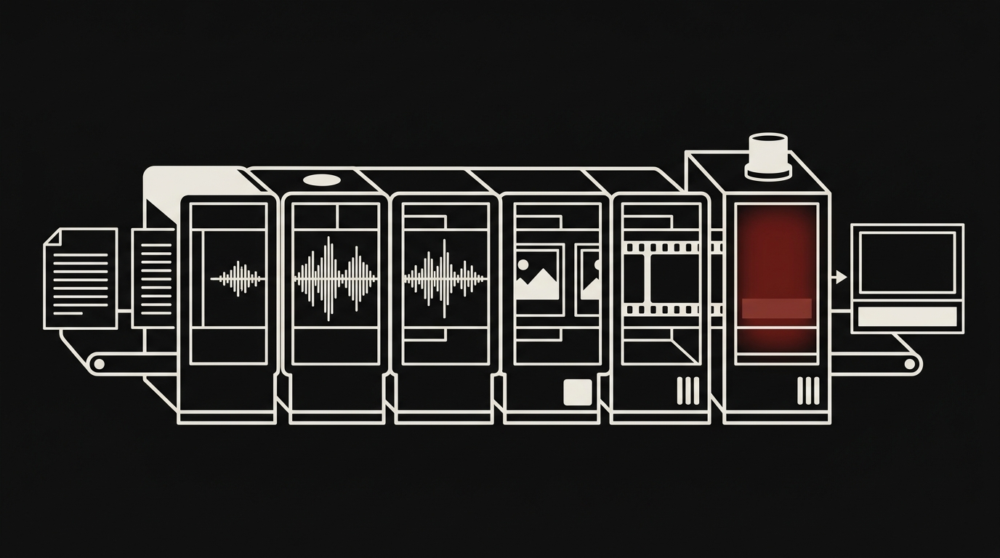
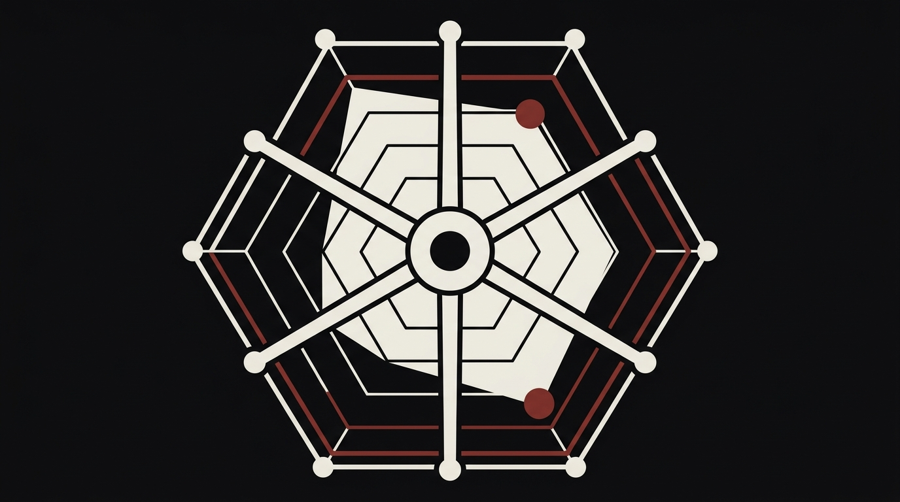
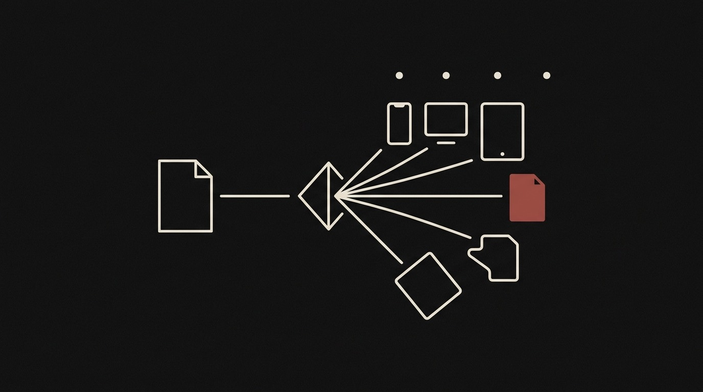
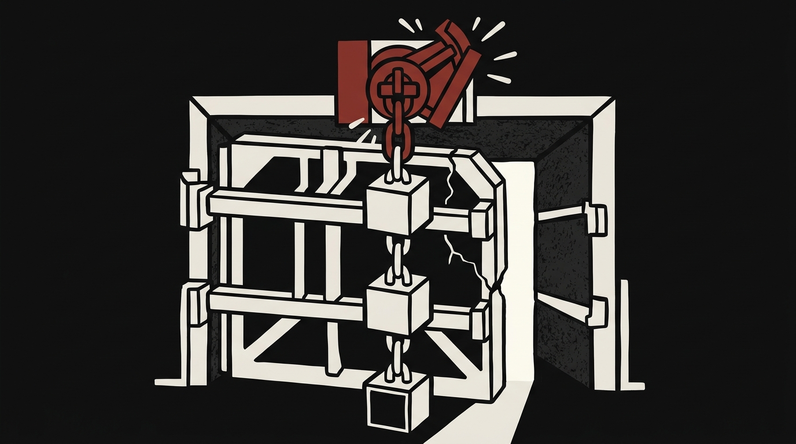
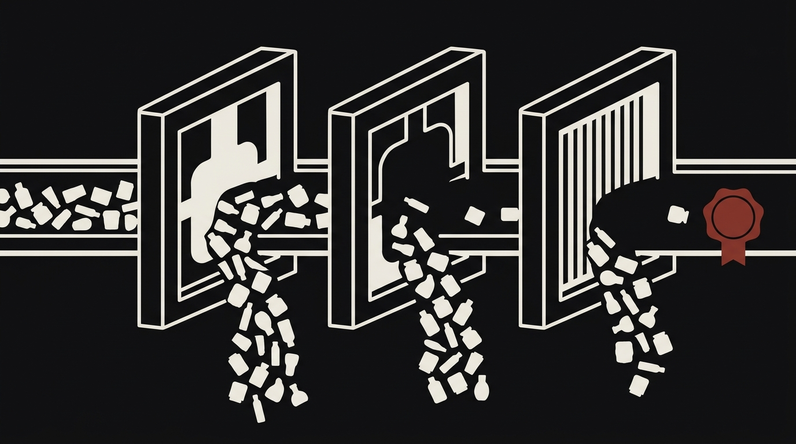

Featured
Public repos, live case studies, and a production system
Script in, captioned video out, cost logged
Seven-stage video pipeline in Node and ffmpeg, built on the ElevenLabs stack. Feed it a plain-text script, out comes a finished, captioned short. Every API call logs to a costed run manifest. Each run is auditable down to the cent.
Architecture public, private life quarantined
A personal agentic operating system that runs identically under Claude Code and Codex: deterministic orchestration, tiered memory, a locked-decision registry, and a CodeRabbit-reviewed development lifecycle. The signature is the privacy quarantine. A fictional synthetic twin stands in for the private corpus, and a mechanical gate proves no personal fact reached the public cut. This public repo is that verified output, regenerated from a script, never hand-edited.

Scores drafts against a target voice
Built a Python pipeline on Claude that scores drafts against a target voice on six stylistic axes and blocks anything below a QA threshold. "Sounds like me" isn't a spec, so this makes it one. Calibrated on 6.9M+ words of executive comms, with dual-persona review and a deterministic offline mode. Method and sample corpus are in the repo.

One story, shaped for every platform
A multi-agent content engine on Claude: sources live angles, drafts a master, and adapts it to the mechanics of nine platforms for four audiences. Every draft passes one deterministic voice and format gate, and nothing posts without a person pressing send.

Job-search automation, in production
A job-search automation system: ATS portal scanning, LLM role evaluation, CV generation, and batch processing. Runs as a production fork of open-source santifer/career-ops. Orchestrates multiple models across roughly 50 scheduled agents on macOS launchd. Powered 740+ role evaluations. Operated software, not a demo.

A tax checker that must cite or stay silent
A Claude-based agent that checks tax filings against a four-layer knowledge base: federal code, state statutes, IRS publications, precedents. It refuses to answer without citations: a confident wrong answer about taxes is worse than none. In practice it caught a roughly $19K error that commercial filing software had pre-filled and defended.

Triage agent for internal comms requests
A sanitized public demo of an internal-communications triage agent, built on Google Apps Script and Gemini. It classifies incoming requests, drafts revisions, and escalates the rest through three sequential prompts with conditional knowledge-base loading. A confidence threshold routes anything the model is unsure about to a human instead of letting it guess.

Budget-gated wardrobe recommendations
A TypeScript PWA that recommends wardrobe purchases under a real budget. The LLM only pulls product data from a page. Three deterministic code gates (budget, climate, aesthetic rules) issue the verdict, and unknown data returns INSUFFICIENT_DATA instead of a guess. An append-only audit log keeps the whole decision path inspectable.